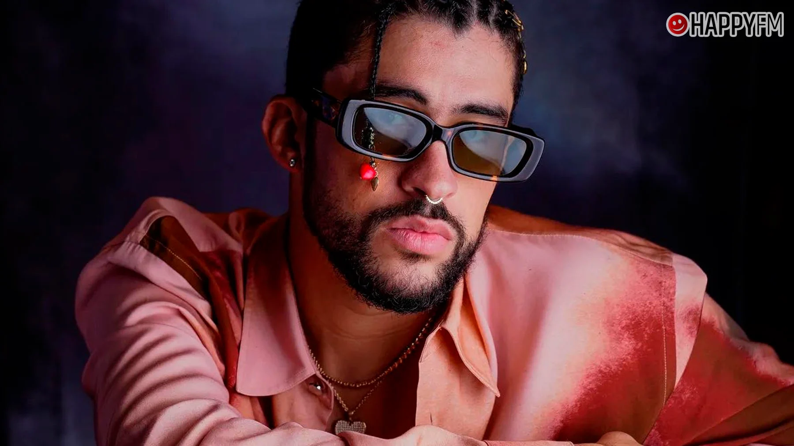

El artista puertorriqueño ha confirmado que su nuevo proyecto discográfico llegará este verano. Según sus redes sociales, el álbum contará con colaboraciones internacionales y una nueva dirección musical que sorprenderá a sus fans.

Fuentes cercanas al artista aseguran que el disco mezcla sonidos electrónicos con ritmos tradicionales del Caribe. La expectación entre sus seguidores es máxima tras dos años sin lanzar material nuevo.
Bzrp rompe récords con su nueva Music Session
10 de abril de 2025
El productor argentino Bizarrap ha vuelto a demostrar por qué es uno de los más influyentes del género. Su última sesión superó los 50 millones de reproducciones en las primeras 24 horas en Spotify.
Esta nueva entrega forma parte de una serie de colaboraciones que Bizarrap tiene previstas para lo que queda de año. Los fans ya especulan sobre quién será el próximo invitado a su famoso estudio.
El trap español sigue creciendo: nuevos artistas a seguir
5 de abril de 2025
La escena urbana española no para de crecer. Artistas emergentes de ciudades como Madrid, Barcelona y Sevilla están consiguiendo millones de reproducciones con sonidos propios que mezclan el trap americano con el español más castizo.
Nombres como Quevedo, Rels B o Abhir Hathi ya son conocidos a nivel internacional, pero la siguiente generación promete ser todavía más global. Las plataformas digitales han sido clave para este crecimiento sin precedentes.